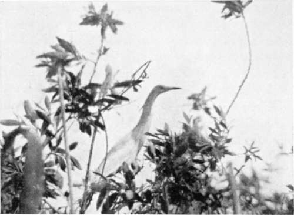
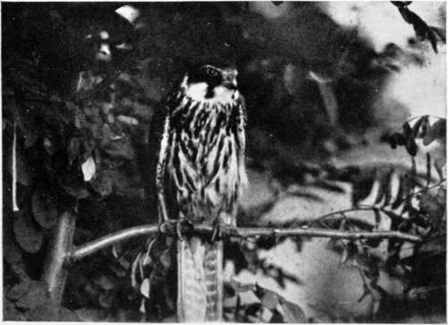
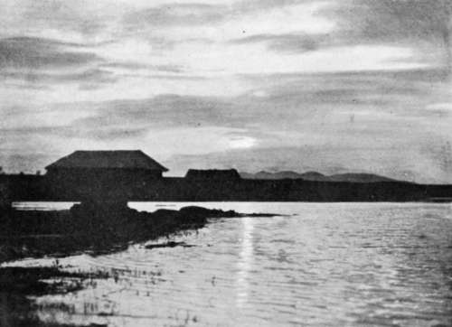

Collecting In The Dobrudscha. Part 12
Description
This section is from the book "Bird-Hunting Through Wild Europe", by R. B. Lodge. Also available from Amazon: Bird-Hunting Through Wild Europe.
Collecting In The Dobrudscha. Part 12
The water was very deep, in most places from six to eight feet, but in one spot at the outside of the colony I found it was just possible to stand with the camera. I had provided extra legs to screw on the tripod for the deep water generally found in this district, furnished with a broad flange to prevent sinking in the soft mud ; and after I had donned a new pair of waders nearly up to my chin, I lowered myself from the stern of my canoe. Getting in and out of a boat in waders is a ticklish operation, and in these small canoes I had to be particularly careful, especially in getting back again, for the slightest disturbance of the equilibrium would have resulted in a capsize.
Even with the extra length on the tripod it was only barely possible to work here, and to add to my difficulties there was a raging wind blowing. There generally is, I notice, when with great difficulty I have been able to reach a good position for a series of photographs of interesting or rare birds.
However, when I had sent the two boats away to a short distance I waited for some time, with but small hopes of success. After wheeling about in confusion the birds at last began to return to their nests, and I could see them settling in all directions except just in front of me; and when they did approach it was impossible to obtain a clear view for the waving bushes and high reeds. The only chance I had was at a Squacco Heron which perched for some time on a tall sallow not far away, but even then the difficulty in getting the camera to bear on it in such deep water was considerable, and the result was not very encouraging.
Squacco Heron (Ardea Ralloides)
Hobby (Falco Sub-Buteo)
Then I called up the boats, and we proceeded to take some eggs. The nests of Pygmy Cormorants all contained young birds except one, which held a clutch of much-addled eggs. They were white and chalky, and very elongated in shape. The young birds were the most hideous little wretches I have ever seen, quite naked, with curious pink pouches on each side of their beaks. The Squaccos' and Night Herons' eggs were much incubated, and a number of the nests contained young birds. I had in a short time a pile of eggs in the fore-peak of my boat, which took me days to blow, so that it was not very surprising that a good many were broken, especially as some of them held quite well-formed and feathered young.
Near this colony we saw six Pelicans flying overhead. These were probably Pelecanus onocrotalus, and were the only Pelicans seen on the trip. The two Russian fishermen we had engaged had held out very small hopes of our finding a colony of these birds on account of the great depth of water everywhere, which had submerged their usual haunts.
At the approach of evening we had to think of a suitable place for sleeping, and finally settled on a small island on which grew several willows. The canoes were drawn up on the bank, and a fire of wood lighted on which our pot was soon in full swing. We had a fine carp for supper, and after tea and cigarettes made ourselves comfortable for the night. I had my india-rubber ground-sheet and a sleeping-bag, in which, with my heavy Burberry coat over all, I slept like a top. I could spare a rug for Rettig, who was not so well provided. In fact, with this outfit I was so warm and comfortable that I could half undress and sleep through heavy rain without shipping a drop inside. In the morning the shallow water which surrounded us was alive with Night Herons and Squacco Herons, Glossy Ibises and other long-legged water fowl. I could have spent the whole day here with great advantage, as there was decent cover for hiding up, and I should, no doubt, have been richly repaid in photographs, as it was evidently a favourite resort. I have regretted ever since that I didn't stop longer ; but when one is on a quest for special objects it doesn't do to tarry anywhere or to be led aside for anything else, however tempting. Until the Pelicans were found I felt bound to keep moving on the search, and accordingly we proceeded on our way with reluctance. While the breakfast was cooking a string of seven Mute Swans flew over.
Heavy rain drove us to take refuge towards midday in an empty' hut made of reeds. Nothing but such bad weather, for it was a regular downpour, would have induced me to enter this noisome abode; for it was full of mosquitoes, which clung to the rotting walls in thousands and buzzed hungrily round us as we entered. The ground was so sodden that when we sat the water oozed up and made a pool, and there was, to complete our discomfort, an overwhelming stench of damp and rotten reeds and general filth. However, here we were kept prisoners for a couple of hours ; and after eating some cold food we had, we slept an uneasy siesta as well as we could for the mosquitoes. This was the only roof we had over us for the whole of this trip.

Scenery Near The Iron Gates
Sunset in the Balta
We reached this day the mouth of the St. George's arm into the Black Sea, and turned south to explore the maze of marshes which surround the small lake of Dranov, which I passed through last year. This district was where Ivan thought we might, if anywhere, find the nesting-place of onocrotalus, but we saw no signs of them. There was very little dry ground anywhere, and we searched for some time before we could find a sleeping-place. Passing the night in our small lodkas would have been extremely cramped and uncomfortable. It would have been quite impossible to lie down, and, besides, we couldn't cook anything. At last we discovered a small grass-grown islet, indistinguishable from the surrounding water. On all sides, as far as the horizon, nothing was to be seen but a flat green expanse of water-grass and rushes; we might have been on the boundless prairie, but there was in reality hardly an inch of dry land for miles. In the far distance, about twenty miles away, twinkled a lighthouse in the Black Sea, the sole reminder of human presence. Bitterns boomed on all sides, and the chorus of frog music all night was unceasing.
Continue to:
- prev: Collecting In The Dobrudscha. Part 11
- Table of Contents
- next: Collecting In The Dobrudscha. Part 13